jest operacją matematyczną polegającą na uśrednieniu energii orbitali przez zmianę ich kształtu, tak aby wszelkie orbitale po tej operacji miały jednakową energię. Można to sobie wyobrazić, iż wrzucamy do kotła określone orbitale o różnych energiach (np. 1 x s; 3 x p i 2 x d), następnie gotujemy i wyciągamy orbitale, w takiej ilości jak użyliśmy o średniej energii. W tym wypadku wyciągnę sześć orbitali o hybrydyzacji \(sp^{3}d^{2}\). Orbitale, których nie hybrydyzowaliśmy mają taką samą energię i kształt jak miały na początku. Wszystkie orbitale hybrydyzowane mają bardzo podobny kształt, jednak różnią się ułożeniem w przestrzeni. Wyglądają one zawsze tak jak orbital p, ale trochę rozciągnięte oraz jeden brzuszek jest większy niż drugi
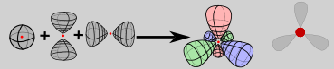
\[s + 2p \rightarrow 3\ orbitale\ sp^{2}\]
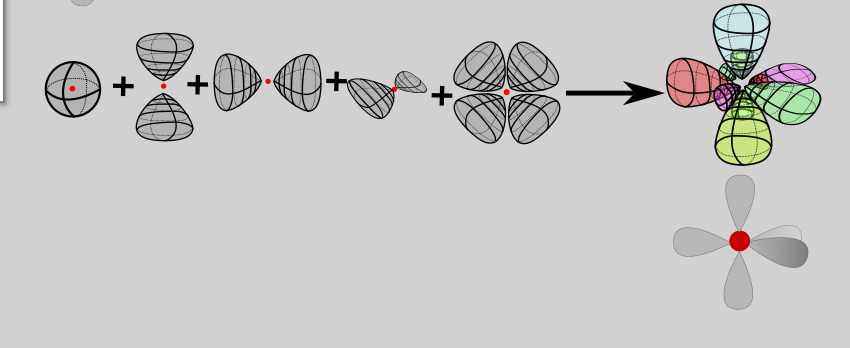
\[s + 3p + d \rightarrow 5orbitali\ dsp^{3}\]
W praktyce hybrydyzacje ustalamy, rysując wzór Lewisa i patrząc na Ilość wolnych par elektronowych oraz przyłączonych atomów dla danego interesującego mnie atomu, przy czym krotności i rodzaj wiązań nie ma znaczenia. Oczywiście wzór Lewisa musi być poprawnie ustalony, inaczej popełnimy błąd. Wolne pary elektronowe zajmują przestrzeń przeznaczoną na atomy, ale nie widzimy ich w kształcie cząsteczki; kształt terminują tylko atomy, czyli kształt kolejnych struktur przy większej ilości par elektronowych możemy wyprowadzić z kształtu podstawowego dla cząsteczki, wyrzucając odpowiednią ilość atomów, taką jak mamy ilość wolnych par elektronowych. Kolejne określenia kształtów mamy kojarzyć tzn. najpewniej będą użyte w treści zadania. Zgodnie z teorią VSEPR liczbę przestrzenną nazywamy ilość przyłączonych atomów do danego atomu i ilość wolnych par elektronowych na nim.
| Ilość wolnych par elektronowych+ przyłączonych atomów=liczba przestrzenna | hybrydyzacja | Dla 0 wolnych par elektronowych | Dla 1 wolnej pary | 2 wolne pary | 3 wolne | |
|---|---|---|---|---|---|---|
| 1 | \[s\] | |||||
| 2 | \[sp\] | 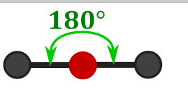 Liniowy, dygonalny |
liniowy |
Punkt |
||
| 3 | \[sp^{2}\] | 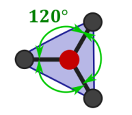 Trójkąt równoboczny, płaski, trygonalny |
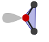 Trójkąt rozwarty, cząsteczka V- kształtna, budowa kątowa |
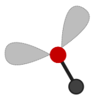 liniowa |
punkt | |
| 4 | \[sp^{3}\] | 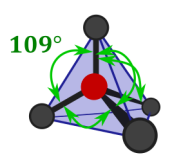 Tetraedryczna, tetraedr, czworościan foremny k4 |
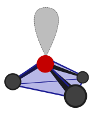 Czworościan nieforemny, piramida trygonalna |
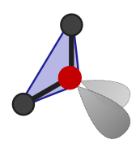 Trójkąt rozwarty, cząsteczka V- kształtna, budowa kątowa |
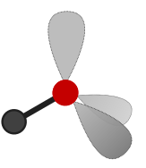 Liniowa |
punkt |
| 5 | \[dsp^{3}\] | 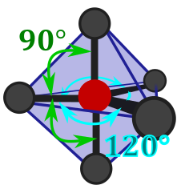 Bipiramida trygonalna (dwie piramidy trygonalne sklejone podstawą–kryształek pozycje te na górze to aksjalne, te boczne ekwatorialne k6 |
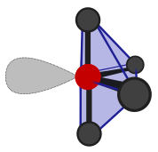 Ang. Seesaw –budowa huśtawkowa, chujawka: |
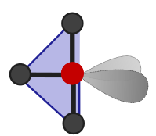 Budowa T- kształtna |
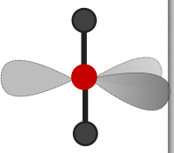 Liniowa, dygonalna |
liniowa |
| 6 | \[d^{2}sp^{3}\] | 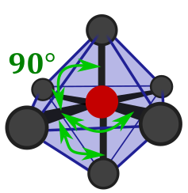 Bipiramida tetragonalna, „K8”, ta struktura jest symetryczna, wszedzie 90, k8 |
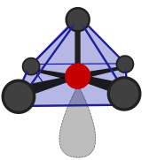 Piramida tetragonalna |
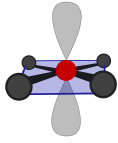 kwadrat |
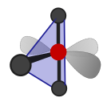 T -kształtna |
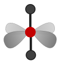 liniowa |
| 7 | \[d^{3}sp^{3}\] | 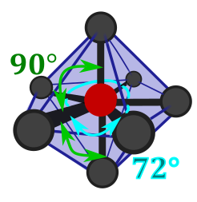 Bipiramida Pentagonalna \(IF_{7}\) K10 |
Przedstawione w tabeli kąty dotyczą ułożenia atomów w całkowicie symetrycznej cząsteczce, w którym wszystkie atomy ligandów są identyczne i nie ma wolnych par elektronowych na atomie centralnym. W przypadku obecności różnych atomów i/ lub wolnych par elektronowych następuje deformacja kształtu cząsteczki – odchylenie wartości kątów od wartości idealnej. Różne atomy mają oczywiście różne promienie atomowe, co powoduje większe „rozpychanie się” takich atomów w strukturze cząsteczki. Można powiedzieć, że z uwagi na większe promienie jonowe zajmują one więcej miejsca, a więc kąty przy większych atomach są większe niż przy mniejszych (i jednocześnie zmiejszają pozostałe). Wielkość kątów rośnie w myśl zasady: 5ty okres>4ty okres>3ci Okres> 2gi Okres> wolna para elektronowa> wodór.
Atomy najpierw ustalają właściwą hybrydyzację dla danego związku i rozmieszczają elektrony na orbitalach hybrydyzowanych, a dopiero potem tworzą wiązania. Można powiedzieć, iż atom sam dobrze wie, jaką cząsteczkę będzie chciał zrobić i jaką hybrydyzację przyjmuje. Należy podkreślić, gdyż jest to często robiony błąd przez uczniów jak i nauczycieli, jak również występuje na starych maturach. Najpierw rozważamy hybrydyzację przedstawioną powyżej metodą, a dopiero potem nakładanie orbitali.